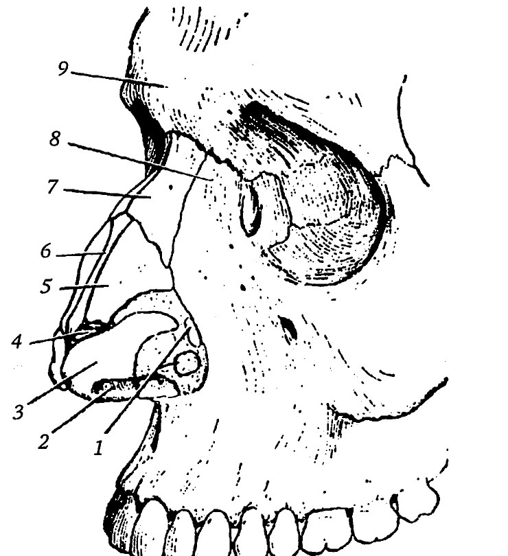
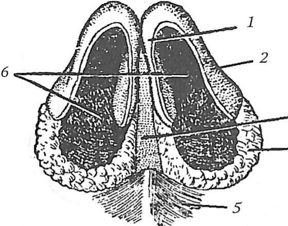
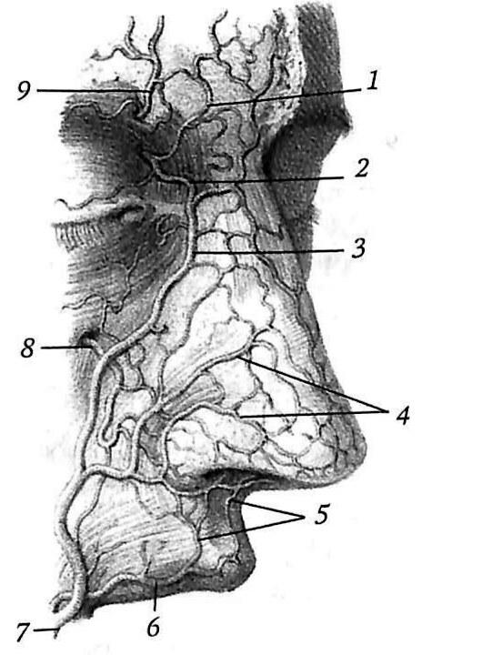
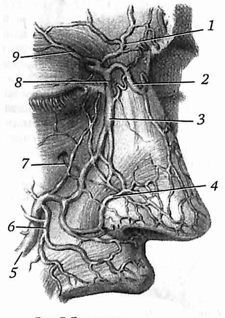
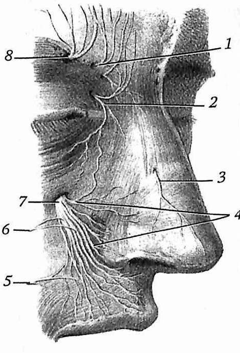
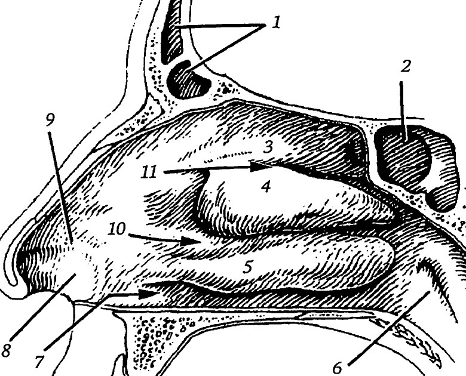
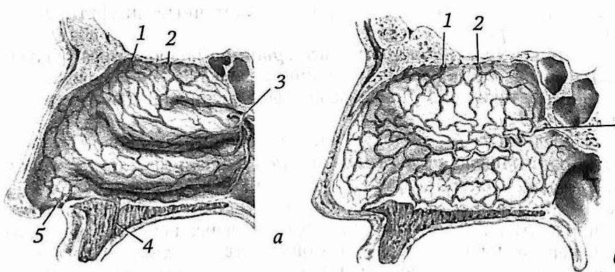
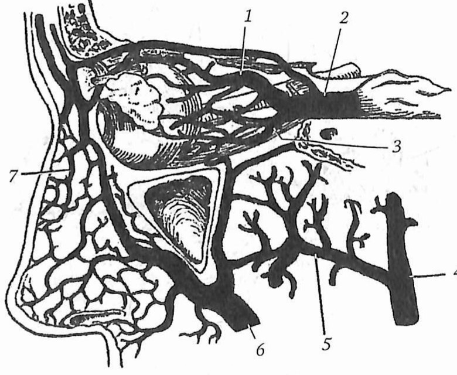
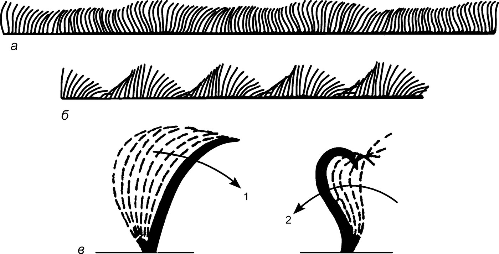
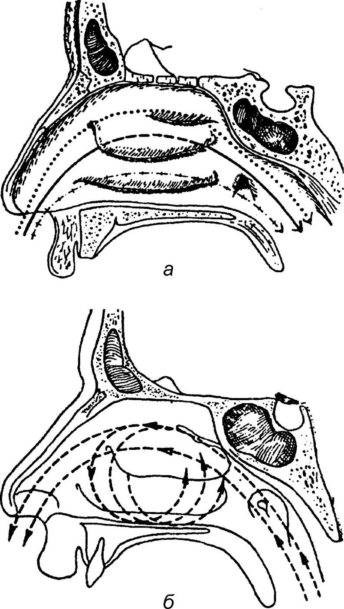

Анатомия носа
Наружный нос
Наружный нос — часть лицевого черепа в форме неправильной трёхгранной пирамиды. Его основа состоит из костей, хрящей и соединительной ткани, снаружи он покрыт кожей. Поэтому в нём различают костную, хрящевую и перепончатую части. Внешне выделяют корень, спинку, верхушку (кончик) и крылья. Корень отделён от лба выемкой — переносьем. Боковые стороны носа сходятся по средней линии в спинку, их нижние отделы образуют крылья, которые ограничивают ноздри. Ноздри разделены подвижной перепончатой частью перегородки.
Костный нос образуют носовые кости и носовая часть лобной кости, по бокам — лобные отростки верхней челюсти. Ниже кость продолжается хрящами. Главный хрящ спинки — парный латеральный хрящ треугольной формы: вверху он соединён с носовой костью и лобным отростком верхней челюсти, медиальным краем срастается с хрящом другой стороны, а между ними вклинивается хрящ перегородки. Ниже лежит большой хрящ крыла — овальная пластинка с медиальной и латеральной ножками. Медиальные ножки обеих сторон образуют верхушку носа, латеральные ограничивают края ноздрей. Между латеральным и большим хрящами обычно лежат один-два добавочных хряща, в задних отделах крыла — малые хрящи крыльев. Количество жировой клетчатки в нижних отделах крыла во многом определяет форму и размер ноздрей.


Кожа наружного носа тонкая и плотно связана с носовой мышцей. Поперечная часть этой мышцы (мышца, сжимающая нос) перекидывается через хрящевую спинку и суживает ноздри, крыльная часть опускает крыло. У перегородки встречается рудиментарная мышца, опускающая перегородку носа; её часто нет.
К хрящам наружного носа относится также и четырехугольный хрящ перегородки носа (cartilago septi nasi), который часто в связи со своим опережающим ростом приобретает искривления различной формы. Этот хрящ составляет нижнюю часть перегородки носа и занимает плоскость между перпендикулярной пластинкой решетчатой кости, а задненижним краем ложится в борозду сошника и переднего отдела носового гребня верхней челюсти. Передненижний край хряща образует впереди верхнюю границу подвижной перегородки носа, кзади опускается несколько книзу и прикрепляется к передней носовой кости (spina nasalis anterior). С обеих сторон этой кости непосредственно прилегают к четырехугольному хрящу небольшие хрящевые полоски, носящие название сошниково-носовых хрящей Якобсона (cartilago vomeronasalis Jacobsoni). по: Бабияк и соавт., т. 1, с. 45
Мышцы наружного носа у человека носят рудиментарный характер. Одна из них — мышца, поднимающая верхнюю губу и крыло носа, — играет определенную мимическую функцию, например во время принюхивания к неприятному запаху. Другая мышца состоит из двух пучков — поперечного, суживающего носовые отверстия (m. compressor naris), и пучка крыла носа (m. dilatator naris), который оттягивает книзу крылья носа и тем самым расширяет вход в полость носа. Третий крыловидный пучок оттягивает вниз перегородку носа (m. depressor septi nasi). Все указанные мышцы могут сокращаться как произвольно, так и рефлекторно, например при глубоком дыхании, при различных эмоциональных состояниях. по: Бабияк и соавт., т. 1, с. 45
Кровоснабжение, лимфоотток и иннервация наружного носа
Кровоснабжение наружного носа осуществляется из систем глазничной артерии (a. dorsalis nasi), лицевой артерии (a. angularis et rami alares). Эти артерии анастомозируют с одноименными артериями противоположной стороны и артериями перегородки носа. Последние являются ветвями артерий верхней губы. по: Бабияк и соавт., т. 1, с. 46
Вены в основном сопровождают артериальные сосуды и вливаются в наружные вены носа и носолобные вены, которые посредством угловых вен анастомозируют с венами полости черепа. По этим анастомозам при воспалении в области наружного носа и кожи лица выше носогубной складки инфекция может проникать в полость черепа и вызывать грозные гнойные внутричерепные осложнения. по: Бабияк и соавт., т. 1, с. 46
Лимфатические сосуды носа впадают в лимфатические сосуды лица, которые, в свою очередь, сообщаются с лимфатическими узлами подчелюстной области. Иннервация наружного носа осуществляется чувствительными волокнами, исходящими из передних решетчатых и подглазничных нервов, двигательная иннервация реализуется ветвями лицевого нерва. по: Бабияк и соавт., т. 1, с. 46



Полость носа: стенки
Полость носа лежит между передней черепной ямкой сверху, полостью рта снизу и глазницами по бокам. Перегородка делит её на две не совсем симметричные половины. Спереди полость открывается ноздрями, сзади через хоаны сообщается с носоглоткой. Костная полость спереди открывается грушевидной апертурой, которую ограничивают носовые кости и носовые вырезки верхних челюстей; внизу по средней линии выступает передняя носовая ость. Хоаны ограничены медиальной пластинкой крыловидного отростка, телом клиновидной кости, сошником и горизонтальной пластинкой нёбной кости.
Верхнюю стенку (свод) образуют носовая кость, носовая часть лобной кости, решётчатая пластинка решётчатой кости и небольшой участок тела клиновидной кости. В решётчатой пластинке около 30 отверстий для обонятельных нервов.
Латеральная стенка устроена сложнее всего. Её образуют лобный отросток и носовая поверхность верхней челюсти, слёзная кость, решётчатый лабиринт, перпендикулярная пластинка нёбной кости, медиальная пластинка крыловидного отростка и нижняя носовая раковина. На этой стенке три носовые раковины; верхняя и средняя принадлежат решётчатому лабиринту, нижняя — самостоятельная кость.
![Рис. 3. Стенки полости носа (сагиттальный распил): 1 — петушиный гребень; 2 — средняя носовая раковина; 3 — решётчатая пластинка решётчатой кости; 4 — верхняя носовая раковина; 5 — апертура клиновидной пазухи; 6 — медиальная пластинка крыловидного отростка клиновидной кости; 7 — перпендикулярная пластинка нёбной кости; 8 — горизонтальная пластинка нёбной кости; 9 — носовая поверхность верхней челюсти; 10 — нёбный отросток верхней челюсти; 11 — резцовый канал; 12 — нижняя носовая раковина; 13 — лобный отросток верхней челюсти; 14 — слёзная кость; 15 — носовая кость; 16 — носовая часть лобной кости; 17 — лобная пазуха](img/tb-nos-stenki.jpg)
Дно образуют нёбный отросток верхней челюсти и горизонтальная пластинка нёбной кости. В переднем конце дна открывается резцовый канал, через который носонёбный нерв выходит в полость рта. Задняя стенка — тело клиновидной кости с клиновидной пазухой.
Таблица 4. Содержимое сообщений полости носа
| Название сообщения | Содержимое сообщения |
|---|---|
| Клиновидно-нёбное отверстие, foramen sphenopalatinum | a. sphenopalatina (из a. maxillaris); v. sphenopalatina (приток pl. venosus pterygoideus); rr. nasales posteriores superiores mediales et laterales (ветви ganglion pterygopalatinum) |
| Резцовый канал, canalis incisivus | rr. septales posteriores (из a. sphenopalatina от a. maxillaris); конечная ветвь a. palatina major (из a. palatina descendens от a. maxillaris); соименные артериям вены впадают в pl. venosus pterygoideus; n. nasopalatinus (ветвь ganglion pterygopalatinum) |
| Отверстия решётчатой пластинки, foramina laminae cribrosae | ветви aa. ethmoidales anterior et posterior (ветвь a. ophthalmica); соименные артериям вены (притоки v. ophthalmica superior); nn. olfactorii (I пара черепных нервов); nn. ethmoidales anterior et posterior (ветви n. nasociliaris из n. ophthalmicus) |
| Носослёзный канал, canalis nasolacrimalis | Носослёзный проток, ductus nasolacrimalis |
Перегородку носа клиницисты называют медиальной стенкой. Её костную часть образуют перпендикулярная пластинка решётчатой кости, клин (киль) клиновидной кости, сошник и носовые гребни верхней челюсти и нёбной кости. Спереди к перпендикулярной пластинке примыкает четырёхугольный хрящ перегородки: задненижним краем он входит в борозду сошника и носового гребня, передневерхним соединяется с носовыми костями. Самый передний отдел перегородки перепончатый. Толщина костной части перегородки 2–3 мм, хрящевой — 3–7 мм.
![Рис. 4. Строение перегородки полости носа: 1 — хрящ перегородки носа; 2 — латеральный хрящ носа; 3 — носовая кость; 4 — лобная пазуха; 5 — петушиный гребень; 6 — решётчатая пластинка решётчатой кости; 7 — перпендикулярная пластинка решётчатой кости; 8 — клиновидный гребень; 9 — клиновидная пазуха; 10 — крыло сошника; 11 — задний отросток хряща перегородки носа; 12 — сошник; 13 — горизонтальная пластинка нёбной кости; 14 — носовой гребень; 15 — нёбный отросток верхней челюсти; 16 — медиальная ножка большого хряща крыла](img/tb-nos-peregorodka.jpg)
Преддверие и носовые ходы
Порог носа на латеральной стенке отделяет преддверие от собственно полости носа. Преддверие покрыто кожей с волосами (вибриссами).
Таблица 1. Размеры преддверия полости носа у новорождённых и взрослых мужчин
| Возраст | Длина ноздри, мм | Ширина ноздри, мм | Высота преддверия, мм | Площадь поверхности одной половины преддверия, мм² |
|---|---|---|---|---|
| Новорождённый | 5–8 | 3–4 | 4–6 | 0,8–1 |
| Взрослый мужчина | 20–25 | 12–18 | 12–16 | 7–10 |
У взрослой женщины размеры несколько меньше, чем у мужчины.
В собственно полости носа различают четыре носовых хода. Общий носовой ход — щель между перегородкой и раковинами, от свода до дна; в него открываются резцовый канал и переднее решётчатое отверстие.
Таблица 2. Размеры полости носа у новорождённых и взрослых мужчин
| Возраст | Длина нижней стенки, мм | Ширина нижней стенки, мм | Расстояние от нижней стенки до верхней, мм | Площадь поверхности слизистой оболочки носовых раковин и носовых ходов, мм² |
|---|---|---|---|---|
| Новорождённый | 20–25 | 5–7 | 8–10 | 5–8 |
| Взрослый мужчина | 70–74 | 10–12 | 20–25 | 67–160 |
Таблица 3. Размеры хоан у новорождённых и взрослых мужчин
| Возраст | Вертикальный размер, мм | Поперечный размер в области дна, мм | Поперечный размер в области свода носа, мм | Площадь, см² |
|---|---|---|---|---|
| Новорождённый | 5–6 | 3–5 | 1–3 | 0,2–0,3 |
| Взрослый мужчина | 20–33 | 12–17 | 7–10 | 2,5–4 |
У взрослой женщины размеры несколько меньше, чем у мужчины.
Нижний носовой ход лежит между нижней раковиной и дном полости носа. Примерно в 10 мм от переднего конца нижней раковины на его латеральной стенке открывается носослёзный канал. Латеральная стенка нижнего хода внизу толстая, а к раковине истончается до тонкой компактной пластинки; поэтому пункцию верхнечелюстной пазухи выполняют именно здесь, примерно в 20 мм от переднего конца нижней раковины.
Средний носовой ход лежит между средней и нижней раковинами. Слизистая оболочка его латеральной стенки образует полулунную щель1, ограниченную спереди крючковидным отростком, сзади — большим решётчатым пузырьком. В полулунную щель открываются пазухи: спереди лобная, в середине передние и средние ячейки решётчатого лабиринта, сзади верхнечелюстная пазуха; её отверстию соответствует углубление — воронка. У заднего конца средней раковины находится клиновидно-нёбное отверстие, через которое в полость носа входят одноимённые артерия и нервы.
Верхний носовой ход лежит между верхней и средней раковинами. В него открываются задние ячейки решётчатого лабиринта, а в клиновидно-решётчатое углубление над задним концом верхней раковины — клиновидная пазуха.

Верхняя и средняя носовые раковины являются выростами решетчатой кости, причем нередко одна из клеток решетчатого лабиринта развивается в толще средней носовой раковины, образуя так называемую concha bullosa (в дословном переводе — пузырная раковина). Нижняя раковина представлена самостоятельной костью, прикрепляющейся к гребню верхней челюсти и небной кости. Самая задняя часть полости носа, находящаяся позади задних концов нижней и средней носовых раковин, называется носоглоточным ходом. по: Бабияк и соавт., т. 1, с. 46–48
В среднем носовом ходе имеется так называемая полулунная щель шириной 2–3 мм (hiatus semilunaris), которая в задней своей части расширяется, образуя воронкообразное углубление — infundibulum ethmoidale, на дне которого находится выводное отверстие верхнечелюстной пазухи — hiatus maxillaris. Если конец зонда направить по дну полулунной щели кзади, можно попасть в это отверстие. Если же прощупать полулунную щель пуговчатым зондом кпереди и кверху, то можно попасть в ductus nasofrontalis и через него — в лобную пазуху. по: Бабияк и соавт., т. 1, с. 48
Описывают также и четвертую носовую раковину (concha suprema), которая отделяется бороздой от верхней раковины и бывает хорошо выражена у новорожденных. по: Бабияк и соавт., т. 1, с. 49
Слизистая оболочка
Толщина слизистой оболочки полости носа 1–2 мм. В ней различают дыхательную и обонятельную области. Дыхательная область занимает полость от дна до середины средней раковины; её эпителий многорядный цилиндрический мерцательный, реснички длиной 3–5 мкм перемещают слизь и пыль. Под эпителием много желёз — слизистых, серозных и смешанных. В глубоких слоях лежат кавернозные (пещеристые) тела — расширенные вены с гладкими мышцами в стенке; они согревают вдыхаемый воздух.
Обонятельная область расположена в верхних отделах (в пределах верхнего носового хода и верхней раковины), её площадь около 500 мм². Рецепторный слой образуют обонятельные нейросенсорные и опорные клетки, а железы этой области выделяют более жидкий секрет.
Слизистая оболочка носа тесно спаяна с надкостницей и надхрящницей. Слизистая оболочка дыхательной области состоит из цилиндрического мерцательного эпителия. Между цилиндрическими клетками мерцательного эпителия имеются бокаловидные клетки, продуцирующие носовую слизь. Под эпителием в tunica propria находятся альвеолярно-трубчатые железы смешанного характера. В слизистой оболочке дыхательной области находится большое количество венозных сосудов, которые в определенных местах образуют кавернозные сплетения. К этим местам относятся медиальная поверхность дыхательной области полости носа и носовые раковины. по: Бабияк и соавт., т. 1, с. 49–50
Слизистая оболочка обонятельной области отличается от слизистой оболочки дыхательной области желтовато-бурым оттенком, зависящим от цвета содержащихся здесь клеток обонятельного эпителия. Вокруг обонятельных клеток в этой области расположены простые цилиндрические клетки, носящие название опорных, и так называемые замещающие клетки. В области обонятельного эпителия находятся боуменовы железы, выделяющие слизь и серозную жидкость, необходимую для функционирования обонятельного эпителия. по: Бабияк и соавт., т. 1, с. 50
Кровоснабжение, лимфоотток и иннервация полости носа
В переднем отделе перегородки носа (locus Kisselbachi, Little’s area) и отчасти у ее основания имеется поверхностно расположенная сеть артериальных сосудов, отличающихся тем, что в их стенках содержится мало эластических и мышечных волокон, что способствует носовым кровотечениям при небольших травмах, подъеме артериального давления, атрофии и сухости слизистой оболочки носа. по: Бабияк и соавт., т. 1, с. 50
Основным сосудом, снабжающим структуры полости носа артериальной кровью, является основно-небная артерия (a. sphenopalatina), вступающая в полость носа через одноименное отверстие. От нее отходят задние носовые артерии, которые питают большую часть латеральной стенки носа и заднюю часть перегородки носа. Верхняя часть латеральной стенки носа получает дополнительно кровь из передней решетчатой артерии, являющейся ветвью глазничной артерии (a. ophthalmica). Между сосудами латеральной стенки носа и лицевой и нисходящей небной артериями существуют многочисленные анастомозы. Носовая перегородка снабжается кровью также ветвями из носонебной артерии. по: Бабияк и соавт., т. 1, с. 51

Венозный отток из анатомических образований полости носа осуществляется посредством многочисленных вен, вливающихся главным образом в лицевую и глазную вены. Последняя отдает веточки, вливающиеся в кавернозный синус головного мозга, что имеет существенное значение при распространении гнойной инфекции из полости носа в указанный синус. по: Бабияк и соавт., т. 1, с. 51

Лимфатические сосуды полости носа представлены глубокой и поверхностной их сетью, а также лимфатическими периневральными пространствами, окружающими нити обонятельного нерва. Особенностью лимфатической системы полости носа является то, что ее сосуды морфологически связаны с субдуральным и подпаутинным пространством, что может быть фактором риска в отношении возникновения внутричерепных осложнений при воспалительно-гнойных заболеваниях носа, например при абсцессе носовой перегородки. Отток лимфы из слизистой оболочки носа осуществляется в направлении заглоточных и глубоких шейных узлов, что также может способствовать распространению инфекции в эти области. по: Бабияк и соавт., т. 1, с. 51
Иннервация слизистой оболочки носа осуществляется I и II ветвями тройничного нерва, в частности глазничным (n. ophthalmicus) и верхнечелюстным (n. maxillaris) нервами, а также из крылонебного узла (ganglion pterygopalatinum). по: Бабияк и соавт., т. 1, с. 51
![Рис. 12. Нервы полости носа и нёба: 1, 2 — обонятельные нервы; 3 — передние носовые ветви; 4 — внутренние носовые ветви; 5 — задние носовые ветви; 6 — передние нёбные нервы; 7 — средний нёбный нерв; 8 — задний нёбный нерв; 9 — нижний альвеолярный нерв; 10 — язычный нерв; 11 — барабанная струна; 12 — глубокий каменистый нерв; 13 — внутреннее сонное сплетение; 14 — лицевой нерв; 15 — преддверно-улитковый нерв; 16 — большой каменистый нерв; 17 — двигательный корешок тройничного нерва; 18 — чувствительный корешок тройничного нерва; 19 — глазной нерв; 20 — нерв крыловидного канала; 21 — верхнечелюстной нерв; 22 — крылонёбный узел](img/tb-nos-nervy-polosti.jpg)
Вегетативная иннервация слизистой оболочки носа осуществляется симпатическими и парасимпатическими волокнами. Симпатическая иннервация обеспечивается двумя путями: а) по нервным сплетениям, окружающим многочисленные сосудистые разветвления основно-небной и решетчатых артерий; б) симпатическими волокнами, проникающими в слизистую оболочку носа в составе нервов, исходящих из крылонебного узла. Парасимпатическая иннервация осуществляется главным образом парасимпатическими волокнами, идущими в составе большого каменистого нерва. Этот нерв отходит от лицевого нерва и в составе нерва крыловидного канала вступает в крылонебный узел, откуда его волокна по отходящим от этого узла нервам распространяются по слизистой оболочке носа. По последним данным, в иннервации слизистой оболочки носа принимают участие языкоглоточный и блуждающий нервы. по: Бабияк и соавт., т. 1, с. 51
Физиология носа: функциональные комплексы
Нос и его придаточные пазухи следует рассматривать как единую анатомо-функциональную систему, отличающуюся не только общностью функций, но и заболеваниями, возникающими в ней. Заболевания этой системы в большинстве своём вовлекают в патологический процесс другие ЛОР-органы (глотка, гортань, среднее ухо) и нижние дыхательные пути. Нарушение физиологических функций носа может вести к аномалиям развития зубочелюстной области, неврозоподобным состояниям, нарушению голосовой, вкусовой и обонятельной функций. по: Бабияк и соавт., т. 1, с. 64
Пазушно-носовой системе присущи две основные функции — дыхательная и обонятельная. Кроме того, эта система выполняет множество других, вспомогательных функций, от состояния которых зависит эффективность двух основных функций. В. И. Воячек выделял и такие функции, как косметическая, мимическая (для наружного носа) и речевая. Структуры внутреннего носа образуют функциональные комплексы, направленные на «биологическую обработку» вдыхаемого воздуха: согревание, увлажнение, очищение, обеззараживание вдыхаемого воздуха и направление воздушного потока по всему пространству носовой полости, в том числе в область обонятельной щели. Выделяют мукоцилиарный, сосудисто-кавернозный с соответствующим нервным аппаратом и аэродинамический комплексы. по: Бабияк и соавт., т. 1, с. 64
Мукоцилиарный комплекс
Мукоцилиарный комплекс является биологической основой эндоназальных структур, а также барьером на пути содержащихся во вдыхаемом воздухе веществ (газообразных, пылевых и аэрозольных частиц, микроорганизмов и др.). В комплексе реализуются основные защитные функции носа, заключающиеся в «биолого-экологической» очистке вдыхаемого воздуха и его кондиционировании. Функции комплекса находятся под постоянным регулирующим влиянием нервной вегетативной системы. Комплекс включает слизистую оболочку дыхательной области носа, состоящую из многослойного цилиндрического эпителия, покрытого мерцательными ресничками, а также ряд железистых элементов, многочисленные нервные окончания, мельчайшие кровеносные и лимфатические сосуды, диффузно расположенные клетки АПУД-системы и структурные элементы соединительной ткани. Толщина слизистой оболочки носа находится в пределах 4–6 мм, причём в верхних отделах и в придаточных пазухах носа она тоньше (1–3 мм), в средних и нижних отделах она толще (5–6 мм). по: Бабияк и соавт., т. 1, с. 64
Многослойному цилиндрическому мерцательному эпителию свойственна чрезвычайная морфологическая лабильность, проявляющаяся в способности изменять своё строение и даже функцию под влиянием внешних факторов. Сначала эти изменения происходят в пределах физиологической адаптации и компенсации, а затем, если факторы вдыхаемого воздуха оказывают длительное повреждающее действие, эпителиальные клетки могут подвергаться необратимым патоморфологическим изменениям, включая перерождение в атипичные клетки. Не менее существенные изменения претерпевает слизистая оболочка носа под влиянием эндогенных факторов (авитаминоз, гормональные дисфункции, вегетативно-сосудистые неврозы, аллергия и др.). Базальная мембрана в носу, в отличие от слизистой оболочки остальных верхних дыхательных путей, достигает значительной толщины. по: Бабияк и соавт., т. 1, с. 65
Важнейшая физиологическая функция слизистой оболочки носа заключается в продуцировании слизи — основного фактора биологической защиты и создания благоприятных условий для функционирования мерцательного эпителия. Носовая слизь образуется в альвеолярно-трубчатых железах, находящихся под эпителием, а также в бокаловидных клетках. Процесс слизеобразования в бокаловидных клетках отличается особой интенсивностью при воспалительных или аллергических реакциях. по: Бабияк и соавт., т. 1, с. 65
Количество слизи, выделяемой в носовую полость, составляет в среднем 1 литр в сутки. Около 70% этой слизи расходуется на увлажнение вдыхаемого воздуха. Химический состав слизи постоянен (95–96% воды, 1–2% неорганических солей, 2,5–3,0% муцина), при этом pH колеблется в пределах 6,8–8,3. В щелочной среде скорость движения ресничек возрастает, в кислой — снижается. При pH 3,0 реснички разрушаются. по: Бабияк и соавт., т. 1, с. 66
Каждая клетка мерцательного эпителия имеет на апикальной поверхности 10–15 ресничек, находящихся в непрерывном волнообразном движении. Каждая бокаловидная клетка окружена в среднем 200 ресничками, что обеспечивает эффективное продвижение выделяемой ею слизи. Обновление клеток мерцательного эпителия происходит каждые 4–8 недель. Частота колебаний ресничек составляет 13–1400 колебаний в 1 мин, в среднем 300–500 (Пискунов С. З., 1993). по: Бабияк и соавт., т. 1, с. 66–67

Ресничка совершает поступательное движение в выпрямленном положении, наподобие весла, сгребая слизь и всё то, что в неё попало из вдыхаемого воздуха. Обратное движение ресничка совершает в согнутом положении; тем самым уменьшается её поверхность, и она как бы подползает под новый слой слизи, не смещая её назад. Скорость перемещения слизи составляет 2,5–7,5 мм/мин. При такой скорости слой слизи, покрывающий всю внутреннюю поверхность носа, может быть эвакуирован в носоглотку в течение 20–30 мин. Цилиарная активность является автономной; центральная нервная регуляция цилиарной активности отсутствует. по: Бабияк и соавт., т. 1, с. 67–68
Общее эффективное движение ресничек осуществляется в сторону носоглотки. Однако на передних концах нижних носовых раковин это движение направлено в сторону преддверия носа. В слизистой оболочке околоносовых пазух действует тот же механизм мукоцилиарного комплекса: движение ресничек в пазухах осуществляется в направлении их естественных выводных отверстий. Следовательно, эвакуация слизи из пазухи — процесс активный, зависящий не столько от диаметра выводного протока железы, сколько от функциональной активности мерцательного эпителия. по: Бабияк и соавт., т. 1, с. 68–69
Сосудисто-кавернозный и нейрогуморальный комплексы
Слизистая оболочка носа снабжена кровеносными и лимфатическими сосудами, оплетёнными многочисленными нервными окончаниями. Веточки артериальных и венозных сосудов образуют от одного до трёх основных артериальных сплетений. Вены формируют поверхностные сплетения на перегородке носа и кавернозные синусы в носовых раковинах. Кавернозные синусы носовых раковин благодаря массивному мышечному слою, мощной вегетативной иннервации и интенсивному кровообращению обеспечивают ряд защитных и кондиционирующих функций: регуляцию объёма протекающего через нос воздуха, его согревание, увлажнение. Роль лимфатической системы полости носа изучена недостаточно. по: Бабияк и соавт., т. 1, с. 69
Главным фактором регуляции трофики пазушно-носовой системы является её иннервация. В иннервации носа и околоносовых пазух участвуют чувствительные, двигательные и вегетативные нервы; в состав последних входят трофические (симпатические) и секреторные (парасимпатические) волокна. Как указывал С. З. Пискунов (1971, 1993), существенное значение имеют рефлексы, исходящие со стороны слизистой оболочки верхнечелюстных пазух, рецепторы которых представлены тензо- и барорецепторами, реагирующими на изменение давления воздуха внутри пазухи. Благодаря этим рецепторам слизистая оболочка пазух активно участвует в рефлекторной регуляции дыхания. по: Бабияк и соавт., т. 1, с. 70
К адекватным раздражителям мукоцилиарного комплекса относятся:
- динамическое (касательное) действие воздушной струи;
- статическое барометрическое давление;
- соотношение O₂ : CO₂ во вдыхаемом и выдыхаемом воздухе;
- влажность вдыхаемого воздуха, комфортное значение которой по показателю относительной влажности составляет 40–60%;
- температура и теплоёмкость вдыхаемого воздуха;
- аэрозоли воздуха и его химический состав.
по: Бабияк и соавт., т. 1, с. 70
Аэродинамический комплекс
Естественные сужения дыхательных путей в носу и в области гортани создают определённые условия для функционирования вентиляционного аппарата лёгких; к этим условиям необходимо добавить постоянно меняющееся давление воздушного столба в дыхательных путях (от фазы «отрицательного» при вдохе до фазы «положительного» при выдохе), что служит обязательным условием для осуществления функции внешнего дыхания. Минимальные (во время сна) и умеренные потребности организма в кислороде обеспечиваются нормальным носовым дыханием. При усиленной физической нагрузке носового дыхания нередко бывает недостаточно, и человек переходит на периодическое или постоянное дыхание через рот. по: Бабияк и соавт., т. 1, с. 71
Воздушная струя на фазе вдоха разделяется на три потока. Первый поток, основной, или средний, проходит через средний носовой ход, в который открываются лобная и верхнечелюстная пазухи. Во время прохождения воздушной струи через узкий средний носовой ход возникает резкое повышение скорости частиц воздуха, в результате чего создаётся разрежение воздуха в зоне, прилегающей к выводным отверстиям пазух. Это приводит к выходу воздуха из пазух в средний носовой ход и смешению его с общим потоком. Второй воздушный поток, нижний, или добавочный (резервный), проходит вдоль нижнего и общего носовых ходов. Третий воздушный поток, верхний, или ольфакторный, направляется в область обонятельной щели. При выдохе поток воздуха совершает более сложные вихревые движения, благодаря которым выдыхаемый воздух несколько раз контактирует со слизистой оболочкой респираторной и ольфакторной областей. по: Бабияк и соавт., т. 1, с. 71–72

Разность давления в полостях носа относительно внешнего давления в покое составляет: при вдохе −6 мм рт. ст., при выдохе +6 мм рт. ст. Повышение давления в носу при выдохе способствует поступлению новой порции воздуха в околоносовые пазухи, причём в них поступает последняя порция выдыхаемого воздуха, более насыщенная углекислым газом. по: Бабияк и соавт., т. 1, с. 72–73
Одной из эффективных защитных реакций аэродинамического комплекса является чихание, выражающееся в быстром сокращении дыхательных мышц, наступающем после короткого вдоха. Рефлексогенной зоной для него являются чувствительные нервные окончания второй ветви тройничного нерва, иннервирующие слизистую оболочку носа в области носовых раковин и перегородки носа. Этот рефлекс неизменно сопутствует острой фазе насморка (в первые 3–4 дня), аллергическим ринопатиям, вдыханию едких пылевых, газообразных и аэрозольных веществ. При атрофических процессах слизистой оболочки носа, например при озене, чихательный рефлекс угасает. по: Бабияк и соавт., т. 1, с. 73
Функции полости носа
Полость носа выполняет дыхательную, защитную, обонятельную и резонаторную функции, и все они зависят от хода воздушной струи. Из-за горизонтального положения ноздрей вдыхаемый воздух поднимается к переднему концу средней раковины, делится на поток по среднему носовому ходу и поток по верхней части общего хода, а у хоан потоки снова соединяются. Раковины замедляют и завихряют воздух: так он очищается, согревается и увлажняется. Крупная пыль задерживается волосами преддверия, до 40% оставшейся оседает на слизистой и удаляется ресничками; лизоцим и муцин слизи обезвреживают микрофлору. За сутки слизистая выделяет около 500 мл слизи.
Раздражение слизистой вызывает защитные рефлексы — чихание, обильное слизеотделение, слезотечение — и меняет частоту и глубину дыхания. Чтобы почувствовать запах, воздух должен проникнуть в верхний носовой ход форсированно; растворению пахучих молекул помогает секрет обонятельных (боуменовых) желёз.
Полость носа и пазухи — неподвижные резонаторы голоса: крупные полости (полость носа, верхнечелюстные пазухи) резонируют низкие тоны, мелкие (лобные, клиновидная пазухи, решётчатые ячейки) — высокие. Когда полость носа выключается из дыхания (полипы, отёк слизистой, аденоидит, синусит), возникает закрытая гнусавость. Длительное ротовое дыхание ухудшает вентиляцию лёгких и газообмен, вызывает гипоксемию и гиперкапнию и сказывается на работе сердца, кровообращении и внутричерепном давлении.
Примечания
1Описана Н. И. Пироговым под названием «косой полуканал» (semicanalis obliquus). (по: Бабияк и соавт., т. 1, с. 85)
Источники
- Гайворонский И. В., Гайворонский А. В., Ничипорук Г. И., Гайворонский А. И. Функциональная анатомия ЛОР-органов. — СПб.: СпецЛит, 2022. — С. 7–23 (рис. 1–8, 10–12; табл. 1–4).
- Бабияк В. И., Накатис Я. А., Говорун М. И. Оториноларингология. Руководство. Т. 1. — СПб.: Питер, 2009. — Гл. 3 «Клиническая анатомия и физиология носа и околоносовых пазух»: с. 45–51, 64–73 (физиология носа и пазух, рис. 3.19, 3.21).
Раздел «Учебник» — справочная теория, не клинические рекомендации. Тактика ведения пациента — по разборам КР.